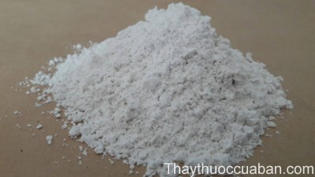
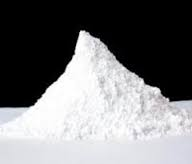

- Sỏi thận cần tuyệt đối kiêng những thực phẩm này
- Bí quyết hết hẳn viêm đường tiết niệu mãn tính
- Tham khảo ý kiến thầy thuốc
Tên khác:
Dịch thạch, cộng thạch, thoát thạch, Phiên thạch, tịch lãnh, thuý thạch, lưu thạch, bột talc
Tên dược: Pulvus Talci
Tên khoáng vật: Magnesi sillicat ngậm nước
Tên tiếng trung: 滑石
Đá hoạt thạch:
( Mô tả, hình ảnh, thu hái, chế biến, thành phần hoá học, tác dụng dược lý )

Mô tả:
Là một loại khoáng vật dạng đá Cục to nhỏ không đều, màu trắng, vàng, xám, lam nhạt, sáng óng ánh như sáp. Chất mềm, trơn mịn, không hút ẩm, không tan trong nước. Không mùi, không vị
Phân bố: Hoạt thạch có ở nhiều nước trên thế giới, ở Việt nam Và trung quốc cũng có nhiều.
Bộ phận dùng và phương pháp chế biến:
loại bỏ đá tạp, rửa sạch, nghiền thành bột mịn hoặc dùng phương pháp thủy phi làm ra bột mịn, phơi khô ở nơi mát.
Thành phần hoá học:
Thành phần chủ yếu của hoạt thạch là Magiê silicat: Mg(Si4O10)(OH)2 hoặc 3MgO,4SiO2H2O. Tỷ lệ MgO trong đó là 31,7%,SiO2 là 63,5%, H2O là 4,8%. Ngoài ra còn có tạp chất Fe, Na, K,Ca, Al..
Tác dụng dược lý:

+ Tác dụng bảo hộ da và niêm mạc:
Hoạt thạch phấn do bởi hạt nhỏ, tổng diện tích lớn, có thể hút lượng lớn chất kích thích hóa học hoặc chất độc, vì thế lúc rải rác phân bố mặt ngoài tổ chức phát viêm hoặc tổn thương, có tác dụng bảo hộ; Lúc uống trong ngoài bảo hộ niêm mạc ruột bao tử phát viêm mà còn phát huy trấn ói, cầm tiêu chảy ra, còn có thể ngăn ngừa hấp thu chất độc trong đường ruột bao tử.
+ Hoạt thạch cũng không phải là hoàn toàn vô hại, trong bụng, trực tràng, âm đạo v.v… có thể gây u hạt (granuloma).
+ Tác dụng kháng khuẩn: Dùng phép bàn đo cho môi trường nuôi cấy hàm chứa Hoạt thạch 10%, có tác dụng ức chế trực khuẩn thương hàn và trực khuẩn phó thương hàn A; Dùng phương pháp phiến giấy thì chỉ tác dụng ức chế khuẩn độ nhẹ đồi với khuẩn cầu viêm màng não
Vị thuốc Hoạt thạch
( Công dụng, Tính vị, quy kinh, liều dùng )

Tính vị - Qui kinh
Tính vị: ngọt hoặc không mùi vị và lạnh
Qui kinh
– Trung dược đại từ điển: Vào kinh Vị, Bàng quang
– Trung dược học: Vào Kinh Bàng quang, Phế, Vị.
– Thang dịch bản thảo: Vào kinh Túc thái dương.
– Lôi công bào chế dược tính giải: Vào 2 kinh Vị, Bàng quang.
– Bản thảo kinh sơ: Vào kinh Túc dương minh, Thù thiếu âm, Thái dương, Dương minh.
- Vị và bàng quang
Công dụng:
+ Hành thủy lợi niệu;
+Thanh nhiệt và thanh nhiệt giải thử.
Liều dùng: 12-16g
Kiêng kỵ:
Tỳ khí hư nhược, tinh hoạt và bệnh nhiệt tổn thương tân dịch, cần thận trọng hoặc không dùng
Ứng dụng lâm sàng của vị thuốc Hoạt thạch
Viêm đường tiết niệu:

Biểu hiện đái buốt, muốn đi tiểu, đái rắt, căng tức bụng dưới và sốt. Hoạt thạch được dùng cùng với Mộc thông, Xa tiền tử, Biển xúc và Chi tử trong bài Bát chính tán.
Chứng thấp nhiệt mùa hè:
biểu hiện khát nước, cảm giác tức nặn bứt rứt trong ngực, buồn nôn và ỉa chảy. Hoạt thạch được dùng với cam thảo trong bài Lục nhất tán.
Nhọt, chàm, ra mồ hôi trộm (đạo hãn) và bệnh da:
Hoạt thạch phối hợp với Thạch cao và Lô cam thạch dùng ngoài. chứa rôm sẩy, mẩn ngứa
Trị ỉa chẩy cấp (thấp nhiệt) đầu đau, khát, nước tiểu đỏ, ho đờm, nôn mửa, tiêu chảy :
Bài thuốc: Cát căn hoạt thạch thang (Sổ Tay 540 Bài Thuốc Đông Y. Nguyễn Phu)
Vị thuốc: Bạc hà .. 12g, Bán hạ (chế) 6g, Cam thảo . 4g, Cát căn .20g, Hoạt thạch .10g, Hương phụ 10g, Phèn phi ..2g, Tía tô .10g, Trần bì ... 6g, Sắc uống.
Trị chứng thấp chẩn, chàm lở, mụn nhọt, rôm sảy:
Lục nhất tán: trong uống ngoài thoa. Bột Hoạt thạch 10g, Bạc hà, Bạch chỉ đều 4g tán bột mịn trộn đều bao vải xoa ngoài. Trị rôm sảy mùa hè.
Trị sỏi mật:
Bài thuốc có: Bột Hoạt thạch 20g, bột Hỏa tiêu 10g, bột Uất kim 6g, bột Bạch phàn 4,5g, bọt Cam thảo 3g trộn đều. Mỗi lần uống 4g, ngày 2 lần liên tục trong 2 tuần đến khi hết triệu chứng.
Hạnh Nhân Hoạt Thạch Thang (Ôn Bệnh Điều Biện, Q.2. Ngô Cúc Thông) Tác dụng: Tuyên sướng khí cơ, thanh lợi thấp nhiệt ở tam tiêu. Trị chứng ngực đầy tức, hơi thở ngắn, mình nóng, nôn mửa, phiền khát, tiêu chảy.
Hoàng Cầm Hoạt Thạch Thang (Ôn Bệnh Điều Biện, Q.2. Ngô Cúc Thông) Thanh hỏa thấp nhiệt, trị chứng khát, cơ thể đau.
Bách Hợp Hoạt Thạch Tán (Kim Quỹ Yếu Lược, Q. Thượng. Trương Trọng Cảnh) Tư dưỡng phế âm, thanh nhiệt, lợi niệu. Trị bệnh bách hợp, phát sốt, miệng đắng, hơi khát, tâm phiền, lo sợ, tiểu ít, nước tiểu đỏ, mạch hơi Sác
Hoạt Thạch Đại Giả Thang (Kim Quỹ Yếu Lược, Q. Thượng. Trương Trọng Cảnh) Thanh nhuận tâm phế, lợi thấp, trừ nhiệt. Trị bệnh bách hợp mà sau khi hạ gây ra âm hư, khí nghịch, thần chí hoảng hốt, kinh sợ bất an, miệng khô, khát, có khi bị nôn mửa, miệng đắng, tiểu ít, nước tiểu đỏ, mạch hơi Sác.
Hoạt Thạch Hương Nhu Thang (Ôn Bệnh Điều Biện, Q.2. Ngô Cúc Thông) Thấm thấp, lợi thấp, phương hương khai khiếu. Trị thử thấp phục ở bên trong, khí cơ của tam tiêu bị trở trệ, khát mà không muốn uống nhiều, tiểu không thông, rêu lưỡi vàng khô.
Tham khảo
Trích đoạn Y văn cổ:
Sách Bản kinh: " chủ thân nhiệt tả, tích (báng ở bụng), nữ tử nhũ nan (phụ nữ ít sữa), trừ hàn nhiệt tích tụ ở vị, ích tinh khí".
Sách Bản kinh mông toàn: " Hoạt thạch trị khát, lợi khiếu, thãm trừ thấp nhiệt, tỳ khí điều hòa mà khát tự khỏi. Nếu trời lạnh thấp nhiều, bệnh nhân tiểu tiện ít mà khát, dùng Hoạt thạch thì khát tự hết. Nếu không có thấp, tiểu thông lợi mà khát tức là bên trong có táo nhiệt, táo thì tư nhuận mà không nên dùng vì càng làm mất tân dịch khát nặng thêm".
Sách Y học trung trung tham tây lục: " nếu dùng cùng với bột Cam thảo trị cảm thử và nhiệt lî tốt, nếu uống cùng bột giá thạch trị chứng thổ huyết, nục huyết do nhiệt tốt. Trường hợp bệnh nhân bên trong có thấp nhiệt, toàn thân phù, tâm phúc đầy trướng, tiểu tiện khó, dùng Hoạt thạch hợp với Thổ cẩu (lẫu cô) tán bột uống, tiểu tiện được thông lợi, phù trướng tự tiêu"
Nơi mua bán vị thuốc Hoạt thạch đạt chất lượng ở đâu?
Trước thực trạng thuốc đông dược kém chất lượng, nguồn gốc không rõ ràng,... xuất hiện tràn lan trên thị trường, làm ảnh hưởng tới hiệu quả điều trị cũng như ảnh hưởng tới sức khỏe của bệnh nhân. Việc lựa chọn những địa chỉ uy tín để mua thuốc đông dược là rất quan trọng và cần thiết. Vậy khách hàng có thể mua vị thuốc Hoạt thạch ở đâu?
Hoạt thạch là vị thuốc nam quý, được sử dụng rộng rãi trong YHCT. Hiện tại hầu hết các cửa hàng thuốc đông dược, phòng khám đông y, phòng chẩn trị YHCT... đều có bán vị thuốc này. Tuy nhiên người mua nên chọn những địa chỉ có uy tín, đảm bảo chất lượng, có giấy phép hoạt động để mua được vị thuốc đạt chất lượng.
Với mong muốn bệnh nhân được sử dụng những loại dược liệu đúng, chất lượng tốt, phòng khám Đông y Nguyễn Hữu Toàn không chỉ là đia chỉ khám chữa bệnh tin cậy, uy tín chất lượng mà còn cung cấp cho khách hàng những vị thuốc đông y (thuốc nam, thuốc bắc) đúng, chuẩn, đạt chuẩn chất lượng. Các vị thuốc có trong tiêu chuẩn Dược điển Việt Nam đều được nghành y tế kiểm nghiệm đạt chất lượng tiêu chuẩn.
Vị thuốc Hoạt thạch được bán tại Phòng khám là thuốc đã được bào chế theo Tiêu chuẩn NHT.
Giá bán vị thuốc Hoạt thạch tại Phòng khám Đông y Nguyễn Hữu Toàn: 36.000vnd/1kg
Tùy theo thời điểm giá bán có thể thay đổi.
+ Khách hàng có thể mua trực tiếp tại địa chỉ phòng khám: Cơ sở 1: Số 481 lô 22 Lê Hồng Phong, Phường Gia Viên, Thành phố Hải Phòng
Tag: cay Hoat thach, vi thuoc Hoat thach, cong dung Hoat thach, Hinh anh cay Hoat thach, Tac dung Hoat thach, Thuoc nam
Thaythuoccuaban.com Tổng hợp
*************************